Admin area manual
Managing courses, orders and access – for day-to-day operation
This manual describes how to use the course platform from the operator’s point of view. Setup and technical details are covered in the separate installation manual. Illustrations show example courses and example accounts with fictitious data.
Contents
- ★Quick start in six steps
- 1Signing in to the admin area
- 2The overview
- 3Creating and editing courses
- 4Lessons and media
- 5Publishing, archiving, deleting
- 6Orders and access
- 7Refunds and withdrawal
- 8Customers and accounts
- 9Events and logs
- 10Pausing sales
- 11Backup
- 12A typical workflow
- 13Effects of changes
- 14Functions in the admin area
- 15Help and common messages
★ Quick start in six steps
- Sign in: Open the admin address you received during setup and sign in with your admin account (chapter 1).
- Create a course: Click New course, enter title, description, currency and price, and click Save. The course is now a draft and invisible to customers (chapter 3).
- Add lessons: Under Add a new lesson, create text, video, PDF or audio lessons and upload the file if needed (chapter 4).
- Design the preview: Upload a cover image and enter the learning goals under What you will learn (chapter 3).
- Publish: Click Done and confirm with Yes. From now on the course is visible to everyone and can be bought (chapter 5).
- Check daily: The overview shows key figures, Payments to review and all orders and events (chapters 2, 6 and 9).
1 Signing in to the admin area
The admin area is a separate page of your platform. Open the admin address you received during setup and sign in with the email address and password of your admin account.
- Enter Email address and Password. The eye symbol lets you show the password briefly.
- Click Sign in. You will then see the overview My courses.
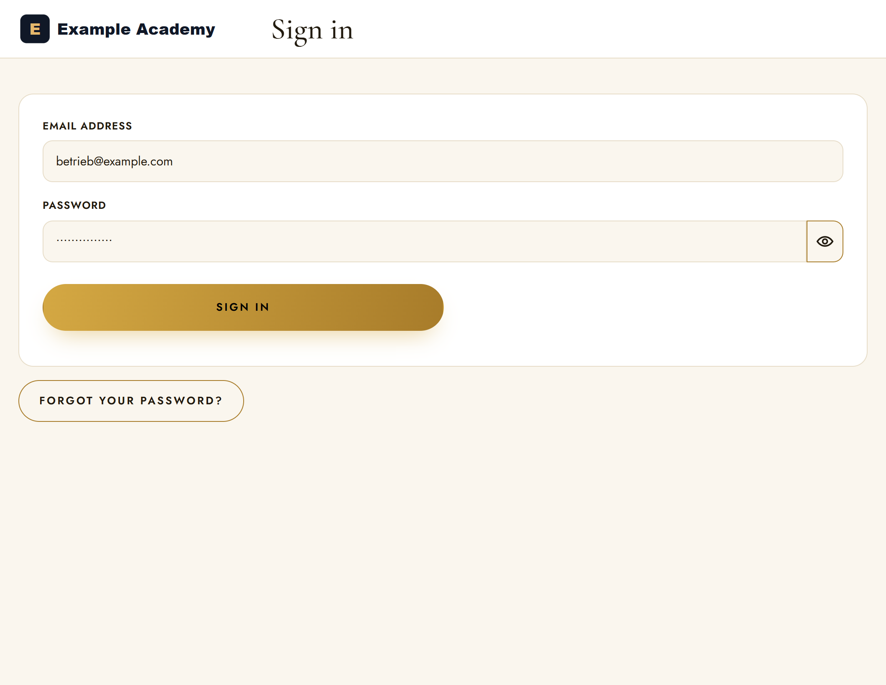
- Wrong details: The platform reports “Wrong email address or password.” Every attempt is recorded in the Admin sign-ins log (chapter 9).
- Too many failed attempts: Signing in is temporarily locked (“Too many attempts. Please wait 15 minutes and try again.”).
- Forgotten password: The link Forgot your password? below the form leads to the general page for resetting the password. You will receive a link by email.
- Customer accounts: Anyone who signs in with a normal customer account only sees “You do not have permission.”
- Signing out: Sign out is at the top right of every admin page.
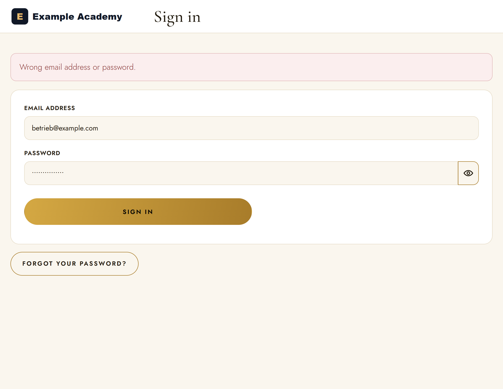
2 The overview
After signing in you see the overview My courses. From top to bottom you will find: key figures, the main buttons, all courses, the payments to review, the open withdrawals, the list Orders and events and, at the very bottom, the tools.
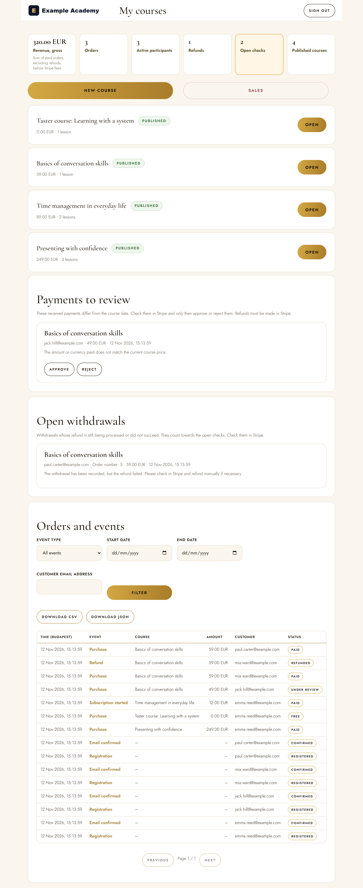
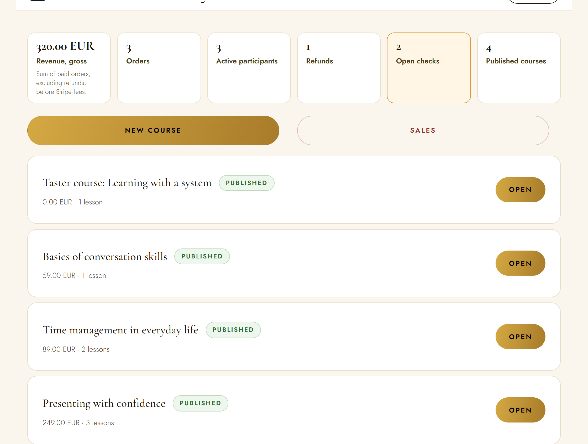
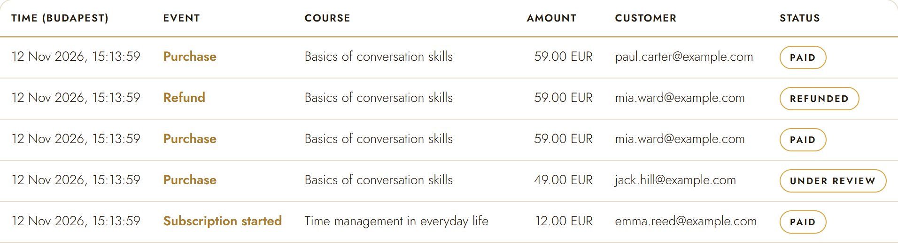
Key figures
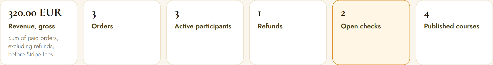
| Key figure | What is counted |
|---|---|
| Revenue, gross | Sum of paid orders, per currency. Refunded orders are not included. Fees of the payment service provider are not deducted. |
| Orders | Number of orders with status “paid” (free courses do not create an order). |
| Active participants | Number of accounts with at least one valid access to a course. |
| Refunds | Number of orders with status “refunded”. |
| Open checks | Payments to review plus withdrawals whose refund is still in progress or has failed. The number matches the entries in the boxes Payments to review and Open withdrawals. If the number is greater than 0, the field is highlighted in colour. |
| Published courses | Number of courses with status “Published”. |
Main buttons and course list
New course creates a course (chapter 3). Sales opens the page for pausing sales (chapter 10). Below them are all courses, newest first, with status (Draft, Published or Archived), price and number of lessons. Open takes you to the course page.
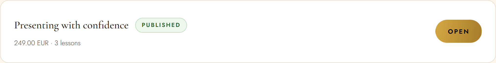
Tools
At the end of the page are the tools, among them Import course package (chapter 3), Stripe reconciliation and Admin sign-ins (chapter 9) and Backup (chapter 11).
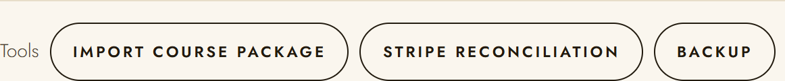
3 Creating and editing courses
Creating a new course
- On the overview, click New course.
- Fill in the fields:
- Title (required, up to 200 characters) and Description (up to 5000 characters),
- Currency: HUF (Ft) or EUR (€). The currency cannot be changed later.
- Price for a one-off purchase: in EUR with up to two decimal places, using a point or a comma (for example 19.99 or 19,99); in HUF only whole forints (for example 19900). The empty field shows an example (EUR 49.00, HUF 19900). 0 means: free course.
- Subscription price (leave empty: no subscription) and Billing period (Monthly or Yearly).
- Click Save. The platform reports “The course has been created. Now add lessons.”
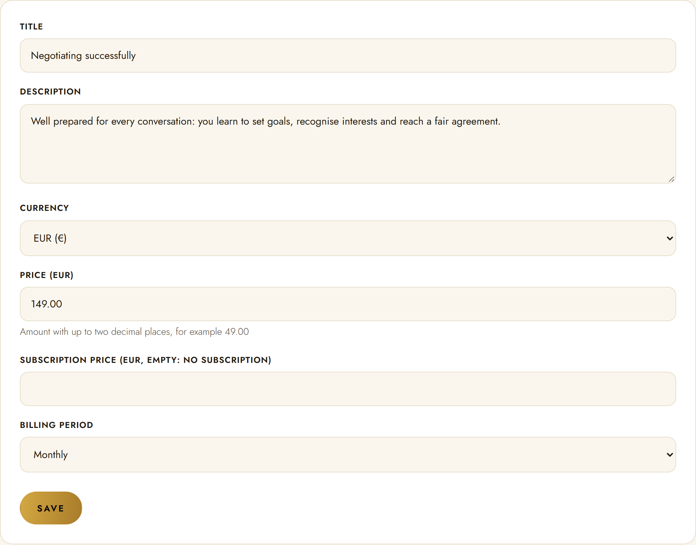
The new course is a draft: customers cannot see it and cannot buy it until you publish it (chapter 5).
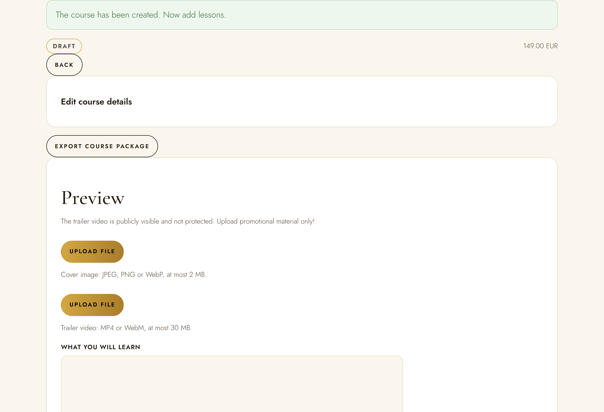
Rules for prices
- One-off purchase and subscription: A course can have a one-off price and, in addition, a subscription price. Customers then see both options.
- Subscription: Subscription price and period belong together. The subscription price must be greater than 0.
- Free: A course with price 0 cannot have a subscription (“A subscription cannot be added to a free course.”).
- Euro: Up to two decimal places, without thousands separators and without a currency symbol (19.99 and 19,99 are equivalent).
- Forint: With HUF, only whole forints are allowed.
Editing course details
On the course page, Edit course details opens the same form. Title, description, price, subscription price and period can be changed at any time; the currency field is locked. Save applies the change immediately. What a price change means for buyers is described in chapter 13.
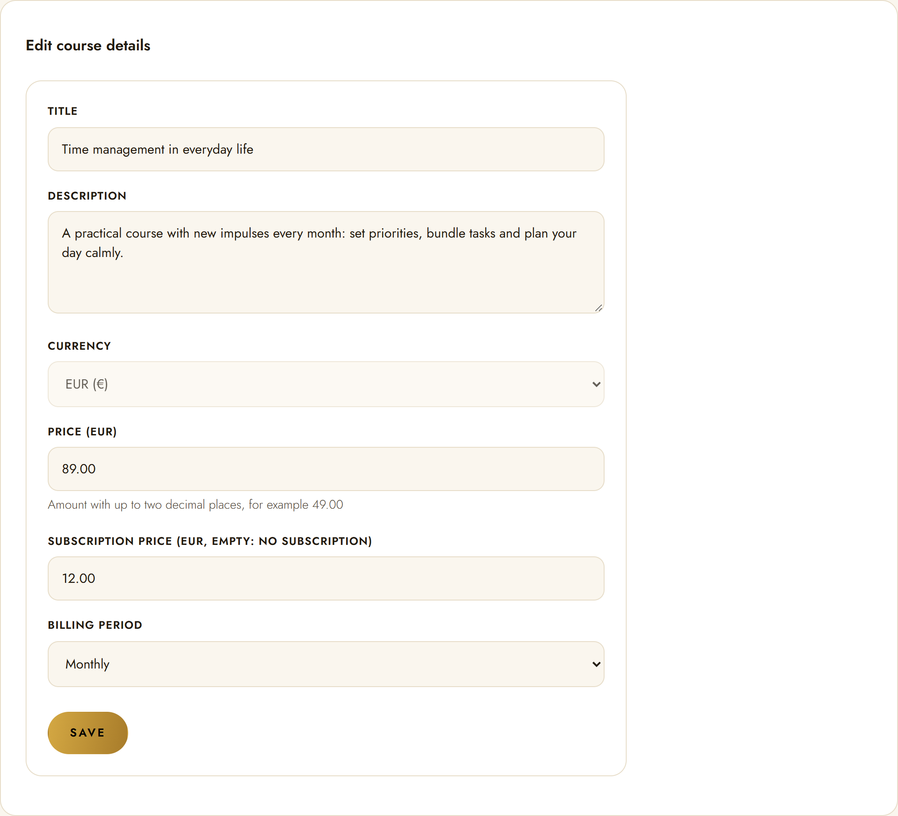
Preview: cover image, trailer and “What you will learn”
In the Preview box you design what prospective customers see on the course page:
- Cover image: JPEG, PNG or WebP, at most 2 MB. Replace exchanges it after a confirmation question, Delete removes it.
- Trailer video: MP4 or WebM, at most 30 MB. The trailer is public and not protected. Upload only promotional material there, never course content.
- What you will learn: the learning goals, one per line (at most 8 lines of 120 characters each). Apply them with Save.
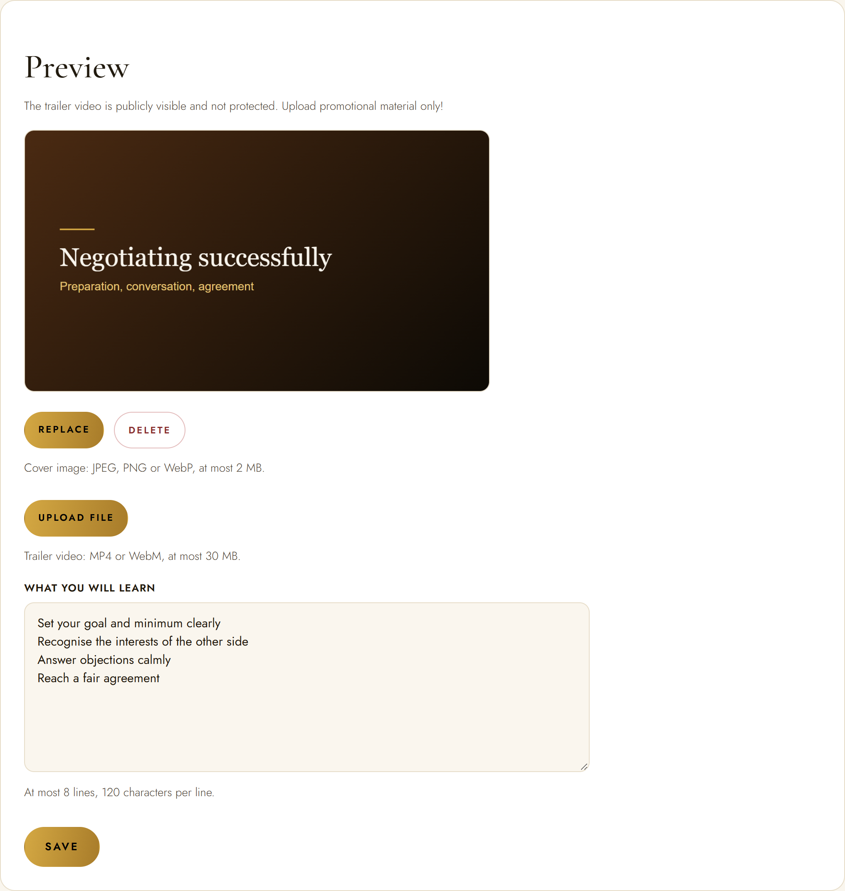
Importing and exporting a course package
A course package is a text package with course details and lesson texts. Under Import course package you paste such a package, click Check, see the result (title, number of lessons, price, notes) and create a new draft with Create draft. Videos and PDFs are not included; you upload them afterwards. A package has 1 to 40 lessons and at most 300 KB; there can be at most 50 drafts at the same time. If the same package is imported a second time, the platform opens the existing draft. On the course page, Export course package creates a package for copying – only for courses in forints.
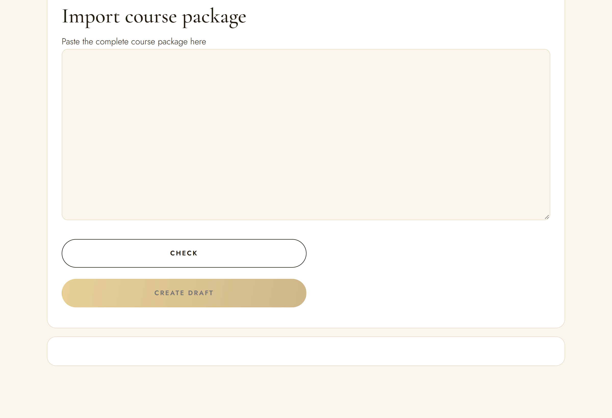
4 Lessons and media
Adding a new lesson
- Open the course and scroll to Add a new lesson.
- Enter the Section (for example “Basics”, optional), the Lesson title (required) and the Type: Text, Video, PDF or Audio.
- The Text field holds the lesson text (up to 8000 characters). For video, PDF and audio it is the description of the file.
- Click Add lesson. The lesson is added to the end of the list.
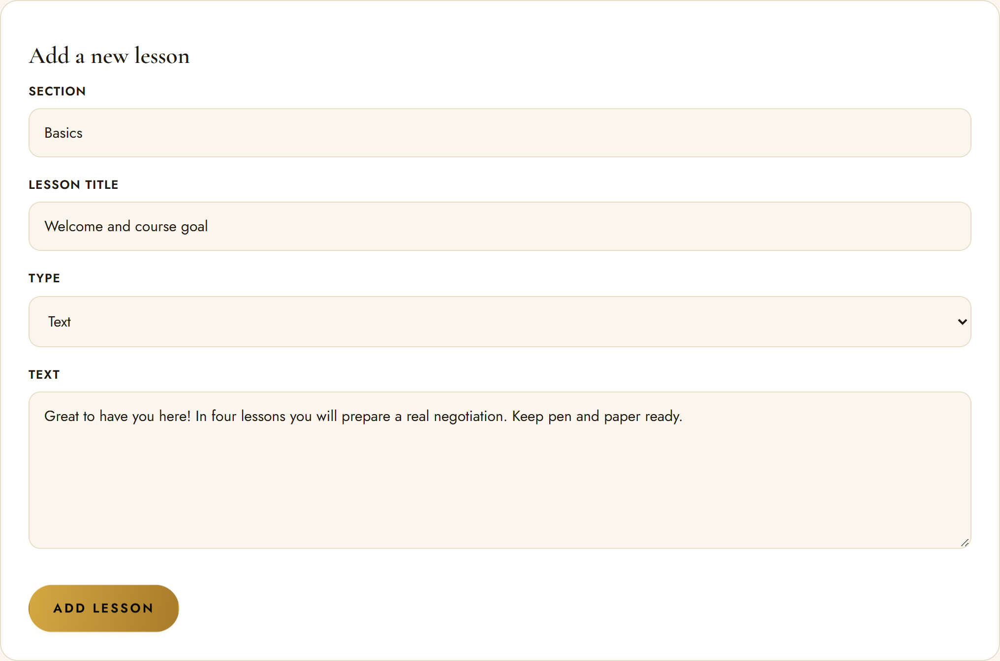
For video, PDF and audio the note “You can upload the file after the lesson has been created.” appears.
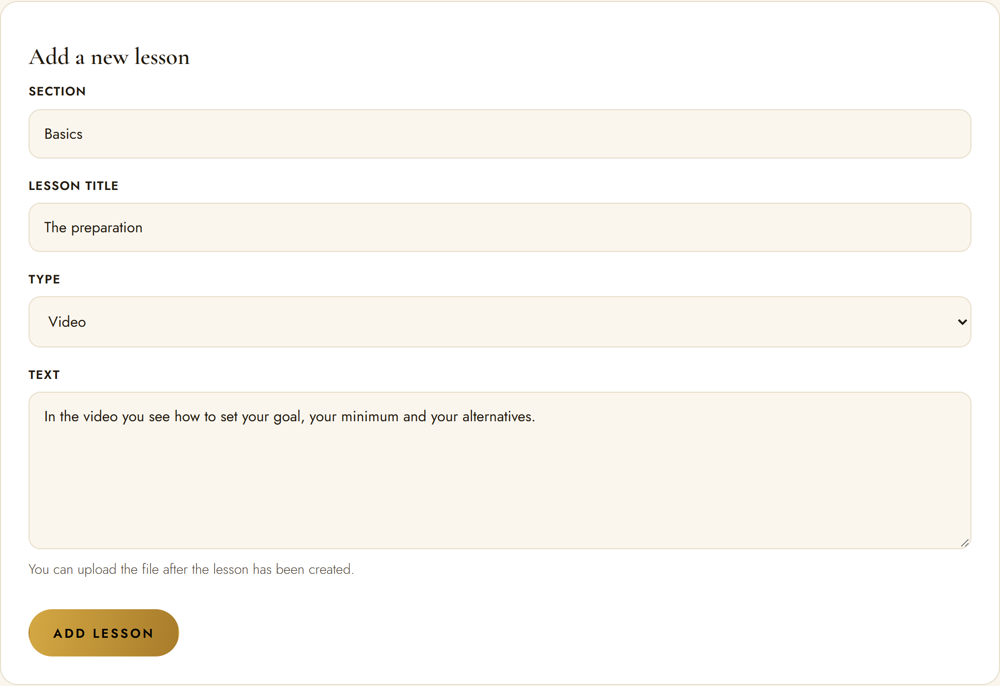
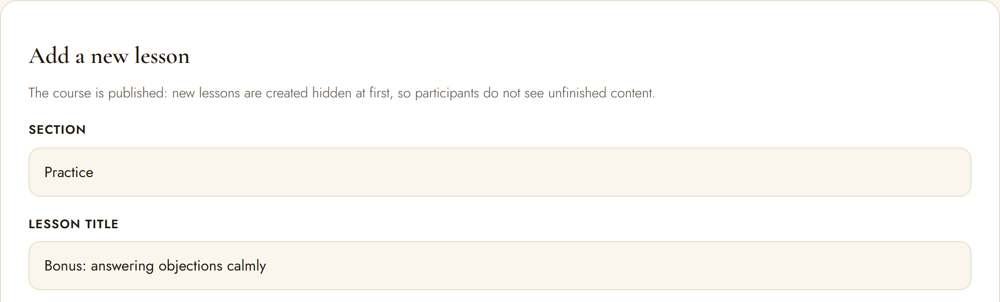
Uploading files
In the lesson, click Upload file and select the file. A progress bar shows the upload; afterwards the file name and size appear.
| Type | Allowed files |
|---|---|
| Video | .mp4, .webm |
| Audio | .mp3, .m4a, .ogg |
- Each lesson has one file. Uploading again replaces the old file.
- Delete file removes the file permanently after a confirmation question.
- The permitted file size is configured; if a file is too large, the platform reports “The file is too large. At most … MB can be uploaded.”
- As long as a file is attached to the lesson, its type cannot be changed.
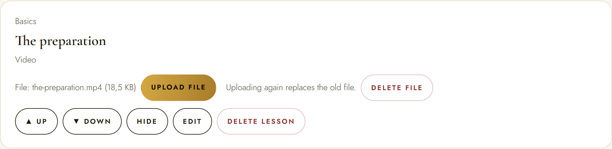
Order, hiding, editing, deleting
- ▲ Up / ▼ Down move a lesson by one position (“The order has been changed.”).
- Hide hides a lesson from buyers; it is shown faded with “Hidden”. Show makes it visible again.
- Edit opens a form for title, section and text at the bottom of the page.
- Delete lesson only appears while the course is a draft or the lesson is hidden. The lesson and its file are deleted permanently.
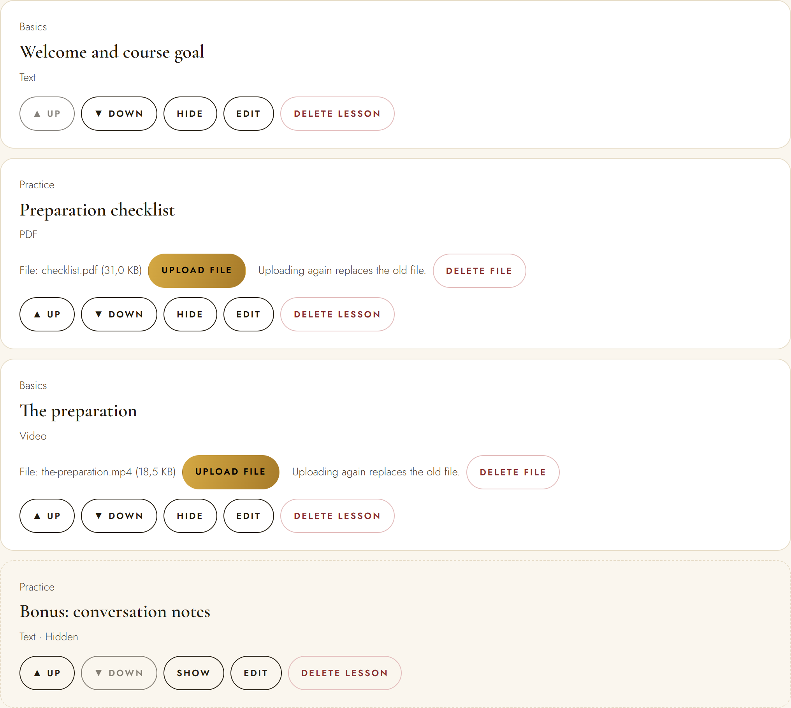
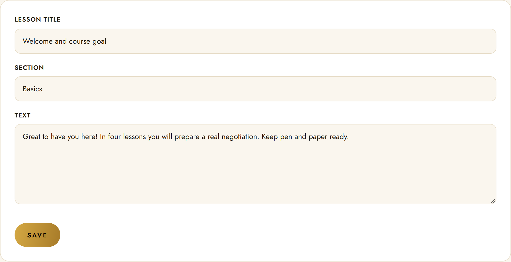
5 Publishing, archiving, deleting
A course has one of three statuses:
| Status | For customers | Possible steps |
|---|---|---|
| Draft | invisible, cannot be bought | Publish (Done), delete |
| Published | in the course list, can be bought | Archive |
| Archived | no longer in the course list, cannot be bought; buyers with valid access can still open the course | publish again (Done) |
Publishing
- At the bottom of the course page, click Done.
- The question “Are you sure? The course will then be visible to everyone.” appears. If the course has no visible lesson, the platform additionally warns that customers would get an empty course.
- Confirm with Yes. Message: “Done! The course is published.”
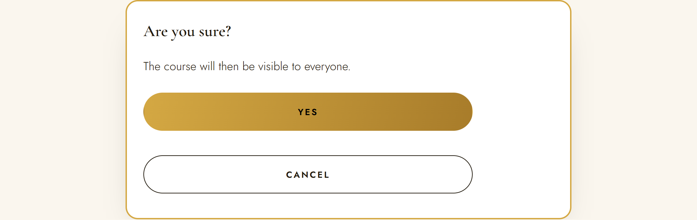
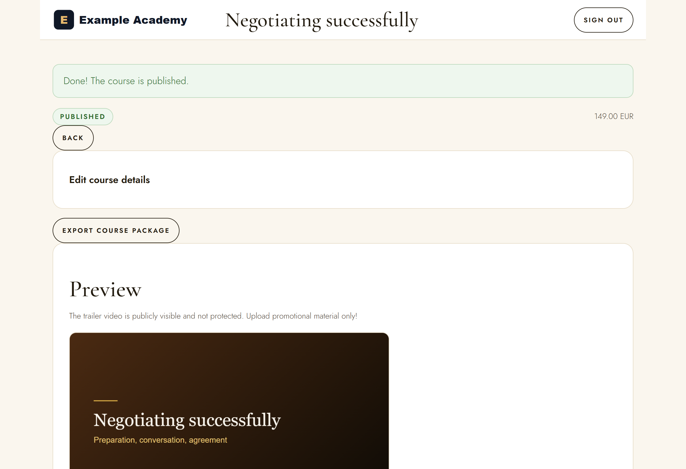
Archiving
A published course has the button Archive. After the question “Archive this course? Existing participants keep their access.” the course disappears from the course list and can no longer be bought. With Done you can publish it again later.
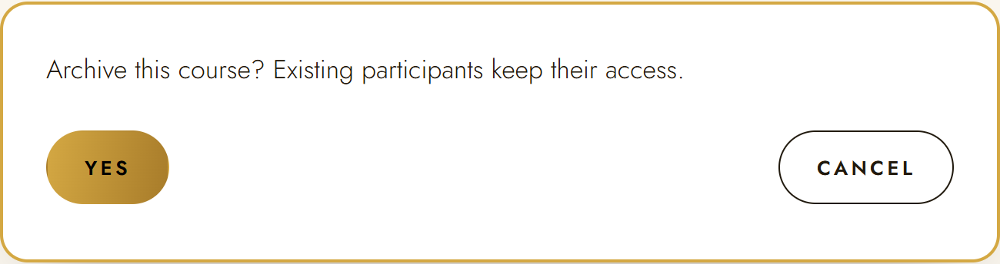
Deleting
Delete course is only available for a draft that has never had orders, access or subscriptions. The course, all lessons and all files are deleted – permanently. In all other cases the platform reports “This course cannot be deleted. Please archive it instead.”
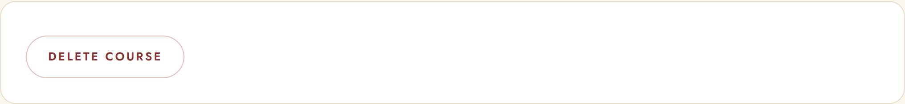
6 Orders and access
Paid purchases run automatically: when the payment service provider Stripe confirms a payment, the platform creates the order, unlocks the course and sends the customer the purchase confirmation. You do not have to do anything for this. You only need to step in for payments to review.
Payments to review
If an incoming payment does not match the course details, the platform does not grant access; instead it places the order in the Payments to review box and notifies you by email. Course, customer, amount, time and reason are shown.
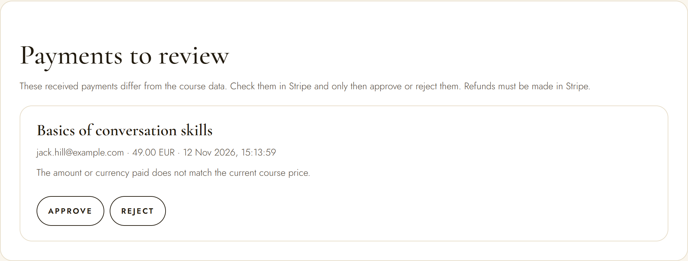
| Reason (as displayed) | Typical cause |
|---|---|
| The amount or currency paid does not match the current course price. | The price was changed while a customer was already on the payment page (chapter 13). |
| The billing interval of the subscription does not match the current course setting. | The subscription period was changed. |
| There was already a valid purchase or a running subscription for this course … | Double payment; no additional access. |
| The paying Stripe customer does not match the user. / The course or the user no longer exists. | Assignment unclear. |
First check the payment in the Stripe account. Then:
- Approve: The customer receives permanent access and the purchase confirmation by email. If a subscription to this course is running for them, it is ended at Stripe. Payments for a subscription cannot be approved here (“A subscription can only be activated after a payment confirmed by Stripe.”).
- Reject: No access. The money initially remains received – you make a refund in Stripe. For a subscription payment, the subscription is ended at Stripe.
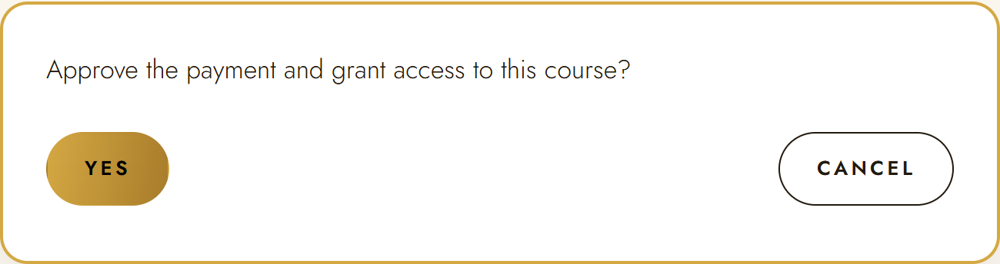
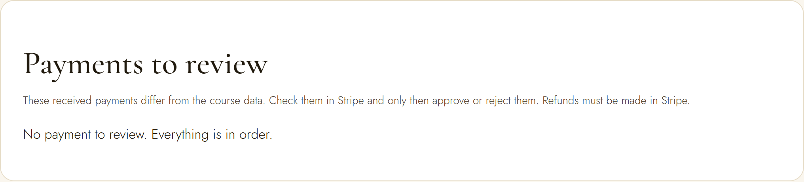
Access to a course
On every course page, the Access box lists all accounts with access: email address, date and origin (Payment, Subscription with “Access until”, or Free access). “Free access” appears for access you have granted and for access to free courses.
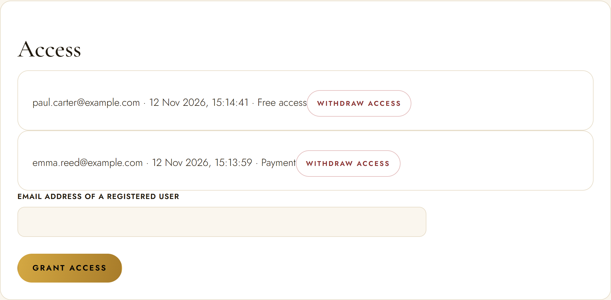
Granting access
- Enter the address under Email address of a registered user. The account must already exist; otherwise the platform reports “There is no registered user with this email address.”
- Click Grant access. The access is permanent (origin “Free access”).
If the account already has subscription access, it is converted into permanent access and the running subscription is first ended at Stripe. If ending it at Stripe fails, nothing changes.
Email to the customer: After you grant access, the customer automatically receives a short email in the language of their account. It tells them that they have been given free access to the course, names the course title and contains a link to their courses. Accounts that have since been deleted do not receive an email.
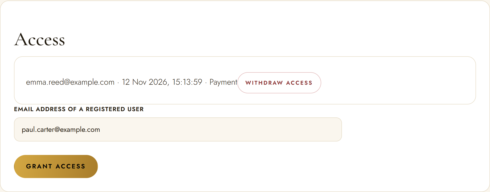
Withdrawing access
Withdraw access next to an entry asks: “Really withdraw access? The order remains. For a subscription, it is ended at Stripe immediately; the money is not refunded automatically.” After Yes the customer can no longer open the course. If needed, you make a refund in Stripe.
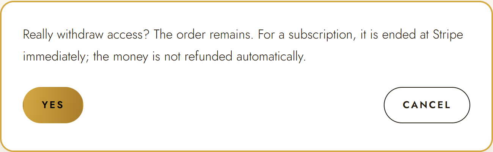
Subscriptions of a course
For courses with a subscription, the Subscriptions box shows every subscription with email address, status (Active, Payment pending, Cancelled, Ended), the end of the paid period and, where applicable, “Ends at the end of the paid period”. Customers can cancel themselves; the admin area has no cancellation button of its own. From the admin area, only Withdraw access ends a subscription.
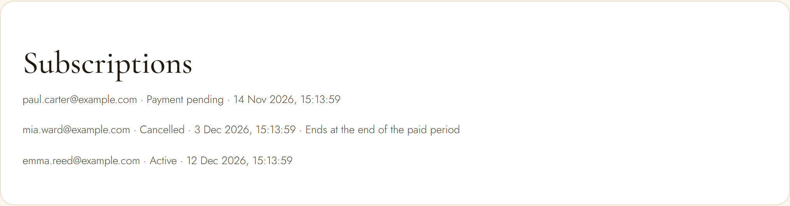
7 Refunds and withdrawal
Refunds
The admin area has no refund button. You make refunds in the Stripe account. Stripe reports them to the platform, and the platform books them automatically:
| Refund in Stripe | Result on the platform |
|---|---|
| full | Order “refunded”, the access from this payment ends (free access remains), event “Refund”. |
| partial | Noted on the order; the access remains. |
| Chargeback by the customer’s bank | The order becomes a payment to review, the access is withdrawn. |
If the Stripe reconciliation (chapter 9) finds a refund that has not been booked completely, it offers Book refund retroactively.
Withdrawal by customers
Customers declare a withdrawal themselves in their account. The platform decides automatically according to rules that are stored in the software. These rules cannot be configured in the admin area; changing them means changing the software.
| Stored rule | Result |
|---|---|
| Deadline (default setting of the software: 14 days from the order) | By default, the platform checks a period of 14 days; it automatically rejects declarations received later. Statutory rights may exist independently of this. |
| When buying, the customer agreed to the immediate start (checkbox) and then opened content of the course | automatic rejection |
| Subscription | automatic withdrawal only for the first payment of a subscription |
| all conditions met | automatic full refund via Stripe, the access ends, a subscription is ended |
For every withdrawal declaration you receive an email with course, customer, order number, amount, time and result. If the refund fails technically, the email says so (“… but the refund failed. Please check in Stripe and refund manually if necessary.”), the case appears in the box Open withdrawals, and the key figure Open checks includes it. In the case of an automatic rejection, check the declaration including possible statutory rights; if in doubt, seek legal advice.
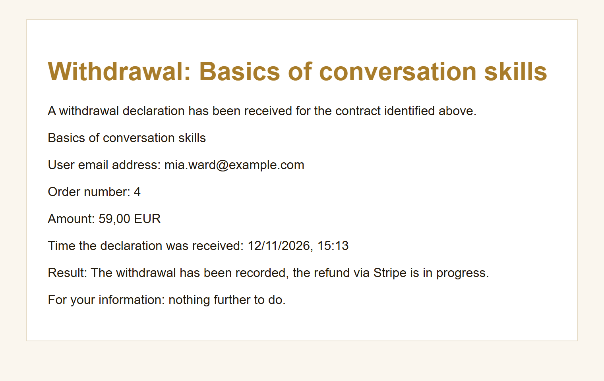
Open withdrawals
On the overview, the box Open withdrawals shows all withdrawals whose refund is still being processed or has failed, newest first. Each entry names the course, the customer’s email address, order number, amount, time and the state (“The withdrawal declaration is being processed.” or “… but the refund failed …”). These entries are included in the key figure Open checks; if there is no open withdrawal, the box says “No open withdrawal.”
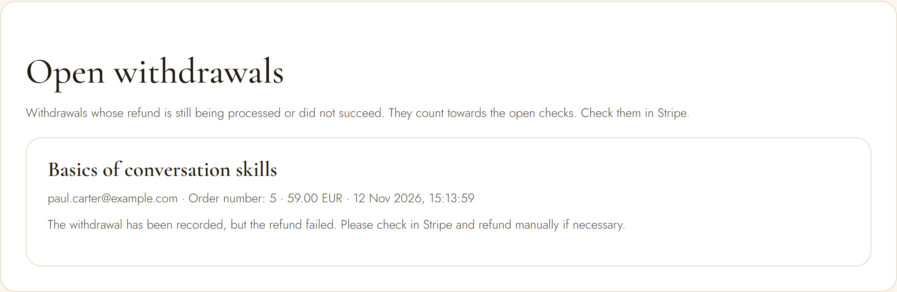
- The list is for viewing only; it has no buttons. Check every entry in Stripe and refund manually if necessary.
- The platform continues to process a withdrawal “being processed” automatically: once the refund has been made, it disappears from the list; if the refund fails, it changes to “refund failed”.
- An entry “refund failed” stays in the list and in the key figure, even after you have refunded in Stripe. Keep a note of cases you have dealt with; your technical support can help with questions.
- Completed withdrawals (refunded or rejected) do not appear in this list. You recognise them by the email, by the key figure Refunds and in the list Orders and events (event type “Refund”).
8 Customers and accounts
Customers create their account themselves and manage it themselves (email address, password, data request, deletion). The admin area has no customer list and no way to create, change, block or delete customer accounts.
What you as the operator can see and do regarding customers:
- Orders and events: registrations, confirmed email addresses, purchases, subscriptions, refunds and deleted accounts, with search by email address (chapter 9).
- Access and Subscriptions per course, granting and withdrawing access (chapter 6).
- Payments to review with the customer’s email address (chapter 6).
9 Events and logs
Orders and events
The overview shows the list of all events, newest first, 50 per page (Previous / Next). Each row shows time (Budapest), event, course, amount, customer and status.
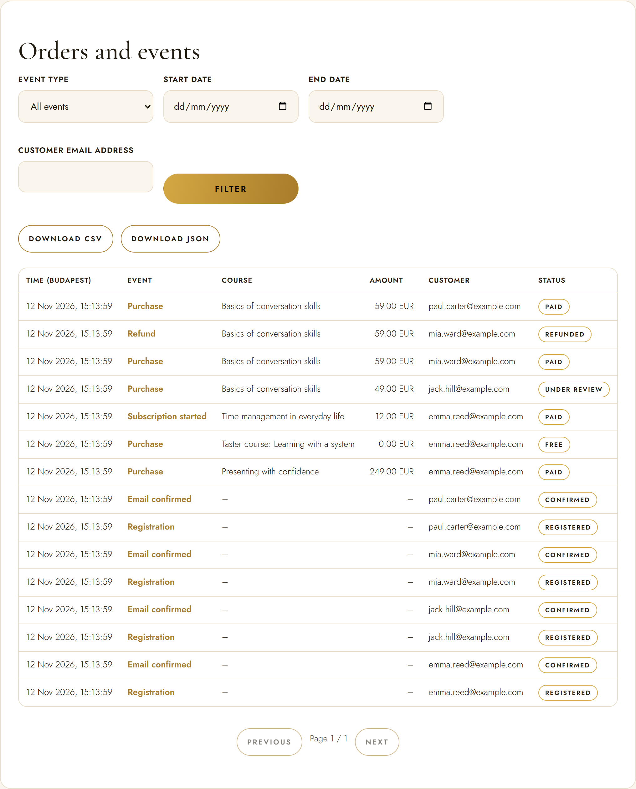
| Event | Possible statuses |
|---|---|
| Registration, Email confirmed | Registered, Confirmed |
| Purchase | Paid, Free, Under review |
| Refund | Refunded, Partially refunded, Refund failed; for chargebacks: Bank inquiry, Disputed payment, Dispute won, Dispute lost |
| Subscription started, Subscription cancelled, Subscription ended | Paid, Under review, Ended |
| Account deleted | – |
Filtering: Choose event type, start date, end date and the customer’s email address and click Filter. Exporting: Download CSV or Download JSON saves the filtered events (at most 10,000 rows) as a file. Events are deleted automatically after a retention period (default setting of the software: 730 days). The operator must have the required retention periods legally reviewed.
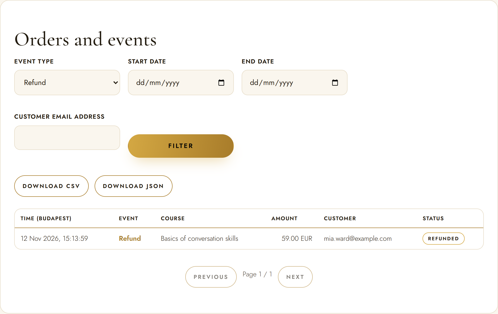
Stripe reconciliation
The reconciliation compares the platform’s orders with the data in the Stripe account (period: the last 35 days). It runs automatically; Reconcile now starts it immediately. The page shows the last reconciliation, the discrepancies found and the earlier reconciliations. If there is a discrepancy, you receive an email.
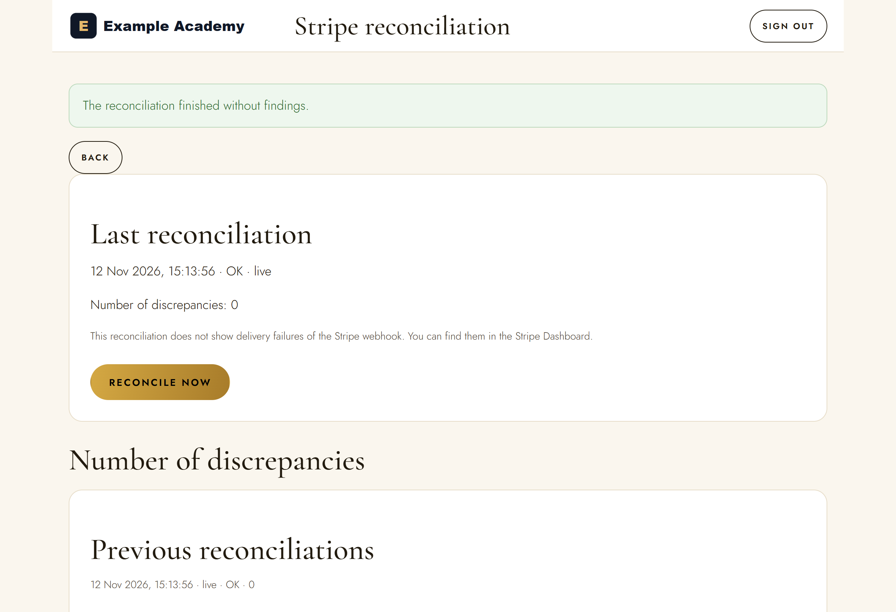
| Possible discrepancy | What to do |
|---|---|
| According to Stripe it was paid, but the platform has no order. | Check in Stripe; the order can only be restored after a manual check. |
| The platform marks it as paid, but Stripe has no confirmed payment. | Check in Stripe. |
| The Stripe refund is not fully booked on the platform. | Book refund retroactively (order and access may change). |
| Disputed payment (chargeback), the order still shows as paid. | Check in Stripe and withdraw the access. |
| A subscription that had already ended was still running at Stripe. | Nothing – the platform has ended it afterwards. |
Note on the page: this reconciliation does not show delivery failures of the Stripe notifications; you can find them in the Stripe Dashboard.
Admin sign-ins
The log shows the last 100 sign-in attempts to the admin area with time, result (for example “Sign-in successful”, “Sign-in failed”, “Temporarily locked”), shortened email address and shortened network address. Unexpected entries are a reason to change the password and inform your technical support.
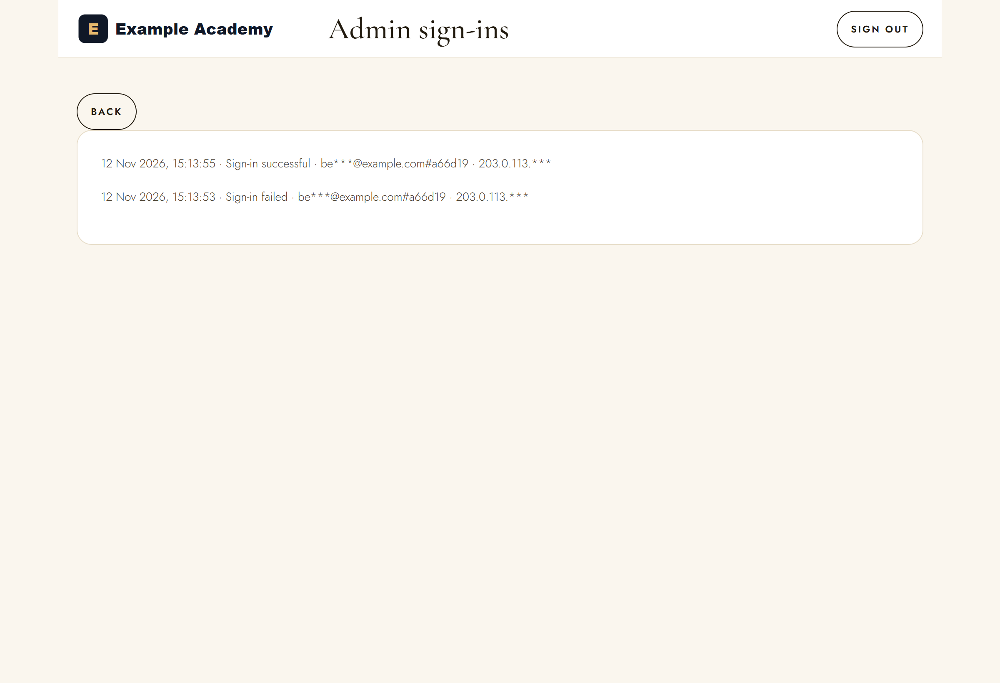
10 Pausing sales
With the Sales button on the overview you temporarily stop all new paid purchases (one-off purchase and subscription), for example while courses are being revised.
- Enter a reason (1 to 200 characters).
- Click Pause sales and confirm with Yes.
- To resume, click Resume sales and confirm.
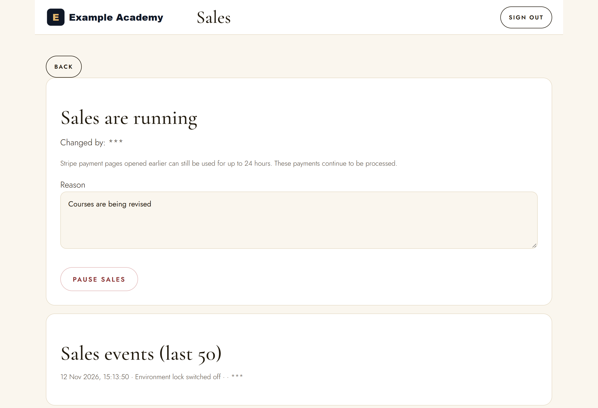
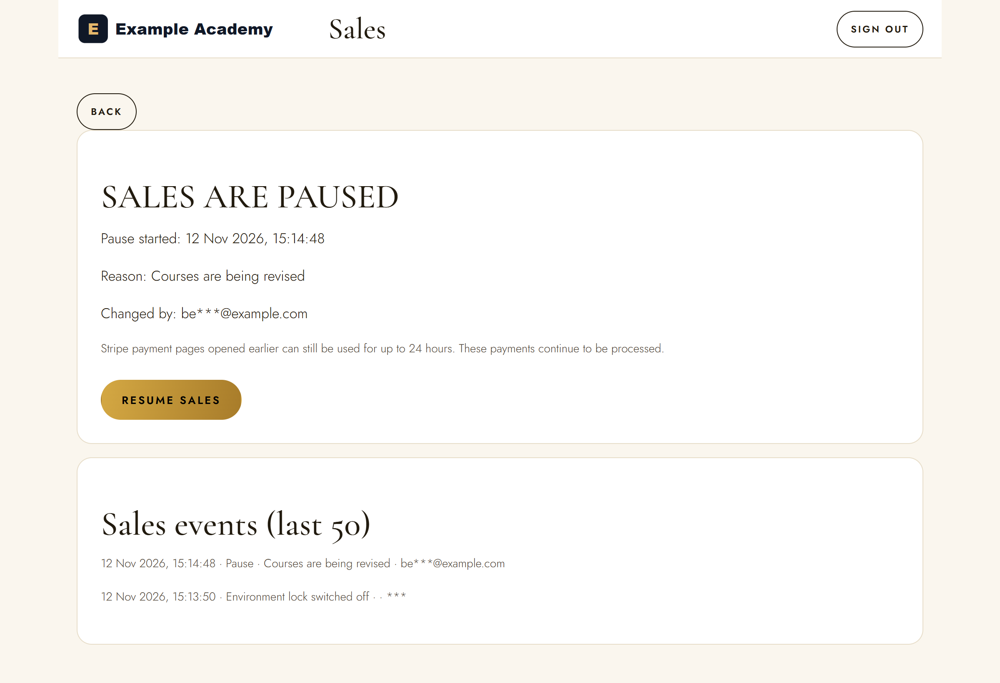
- Customers who want to buy see “Sales are temporarily paused. Please check back later.”
- Courses already bought remain usable, running subscriptions continue.
- Free courses can still be unlocked during the pause.
- Stripe payment pages that are already open can still be used for up to 24 hours; these payments continue to be processed.
- The page shows the start, the reason and who paused, and below that the last 50 sales events.
- If the sales pause is enforced technically, contact your technical support.
11 Backup
Under Backup (tools) you see whether the backup is active, when the last successful backup ran and the list of the latest backups (time, type, result, file name, local and external storage).
- The platform backs up automatically (at start-up and regularly afterwards). These entries are called “automatic”.
- Back up now immediately creates an additional backup (“manual”). If one is already running, the platform reports this.
- Download latest backup saves the last successful backup as an encrypted file. Opening and restoring it is the task of your technical support. Keep encrypted backup files safe and do not pass them on without authorisation.
- “The backup is switched off” means: it was not activated during setup. In that case, contact your technical support.
- If there are problems with the backup, the platform sends a warning email to the configured addresses.
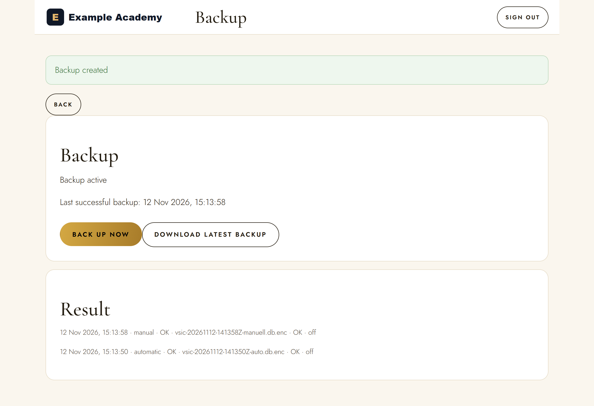
12 A typical workflow
This is how a new course comes about, from the first click to the first order – using the example “Negotiating successfully” from the illustrations.
| Step | What you do | Result |
|---|---|---|
| 1. Create the course | New course: title, description, currency EUR, price 149.00, Save | Draft, invisible to customers (Fig. 8, 9) |
| 2. Create lessons | Create four lessons (text, video, PDF, text); hide the bonus lesson | Lesson list (Fig. 17) |
| 3. Upload media | Video and PDF via Upload file | File name and size appear (Fig. 16) |
| 4. Preview | Cover image and “What you will learn” | Course page complete for prospective customers (Fig. 11) |
| 5. Check the price | Edit course details: price, if applicable subscription price and period | Check the price carefully before publishing (chapter 13) |
| 6. Publish | Done → Yes | Course visible and can be bought (Fig. 20) |
| 7. Check the order | Overview: key figures, list “Orders and events”, if applicable Payments to review | Paid purchases are unlocked automatically (Fig. 32) |
| 8. Manage access | Course page → Access: grant or withdraw access if needed | Fig. 26–28 |
13 Effects of changes
The following table describes what a change means for existing buyers and ongoing payments.
| Change | Effect |
|---|---|
| Changing the one-off price | Existing orders and access remain unchanged. New purchases pay the new price. Anyone who opened the payment page before the change and then pays the old price does not receive automatic access: the payment ends up among the payments to review (“amount or currency does not match”). |
| Changing the subscription price | Running subscriptions continue to be renewed by Stripe at the previous price; the platform recognises these renewals as valid, the access remains. New subscriptions pay the new price. |
| Changing the subscription period | A new subscription payment whose period does not match the current setting goes to the payments to review. |
| Switching off the subscription (emptying the subscription price) | New subscriptions are no longer possible. Running subscriptions continue to be renewed, provided the amount was already paid earlier for this subscription. |
| Currency | Cannot be changed after creation. |
| Changing title, description, lesson texts | Immediately visible to everyone, including buyers. |
| New lesson | In a draft, visible as soon as the course is published. In a published or archived course it is created hidden; buyers only see it after Show. |
| Hiding a lesson | Buyers no longer see the lesson; orders and access remain. |
| Replacing or deleting a file | The old file is gone immediately; buyers only see the new file (or no file). |
| Archiving a course | No longer in the course list, can no longer be bought. Buyers with valid access can still open the course. A payment started before archiving still unlocks access. Publishing again is possible. |
| Deleting a course | Only for drafts without orders, access and subscriptions. Permanent, with all lessons and files. |
| Deleting a lesson | Only in drafts or for hidden lessons. Permanent, with the file. |
| Granting access | Permanent access; the customer receives an email. A running subscription of the customer for this course is ended at Stripe. |
| Withdrawing access | The customer loses access immediately. The order remains, a subscription is ended at Stripe, nothing is refunded automatically. |
| Pausing sales | No new paid purchases; free unlocks remain possible, existing access and subscriptions remain (chapter 10). |
14 Functions in the admin area
Overview of all functions and what they change. There is a single role (Admin); all functions are available to every admin account.
| Function | Content | Orders | Access |
|---|---|---|---|
| Create course, edit course details, preview | yes | – | – |
| Create, edit, move, show/hide, delete lessons | yes | – | – |
| Upload, replace, delete file | yes | – | – |
| Import / export course package | new draft / read only | – | – |
| Publish, archive | visibility | – | – |
| Delete course (draft only) | yes, permanently | – | – |
| Approve payment to review | – | status “paid” | access is granted |
| Reject payment to review | – | status “rejected” | no access |
| Grant / withdraw access | – | unchanged | yes (subscription ended at Stripe if applicable) |
| Book refund retroactively (reconciliation) | – | yes | may change |
| Pause / resume sales | – | no new purchases | – |
| View and export events, view open withdrawals, start reconciliation, view admin sign-ins | – | read only | read only |
| Start and download backup | – | – | – |
Refunds, cancellations of subscriptions and changes to payments themselves do not take place in the admin area, but in the Stripe account or by the customers.
15 Help and common messages
| Message | Meaning and what you can do |
|---|---|
| Please enter the price as a whole number, for example 39900. | Course in HUF: whole forints only, without a decimal separator or currency symbol. |
| Please enter the price with at most two decimal places, for example 49.00. | Course in EUR: at most two digits after the point or comma, without thousands separators or currency symbol. |
| For the subscription, give price and period together, or leave both empty. | Add or empty the subscription price. |
| A subscription cannot be added to a free course. | Set a price or delete the subscription price. |
| The lesson type cannot be changed while a file belongs to it. | Delete the file first or create a new lesson. |
| The file is too large. | Use a smaller file. |
| This course cannot be deleted. Please archive it instead. | The course is published or had orders/access: Archive. |
| This lesson cannot be deleted. Hide it instead. | Use Hide. |
| There is no registered user with this email address. | The customer must register first. |
| The subscription could not be ended at Stripe, so nothing has changed. | Try again later; nothing was changed. |
| This payment is no longer waiting for review. | It has already been processed; reload the page. |
| A backup is already running. / The reconciliation is already running. | Wait a moment and reload the page. |
| Could not connect to the server. | Check the internet connection and try again. |
| You do not have permission. | Sign in with the admin account. |
Emails you receive as the operator
- notifications about sales and payments to review,
- an email for every withdrawal declaration (chapter 7),
- warnings about Stripe reconciliation, backup, sales pause and security events concerning admin access.
Which addresses these emails go to is determined by the setup. For technical questions, for new admin accounts and for everything concerning the setup, contact your technical support (installation manual).